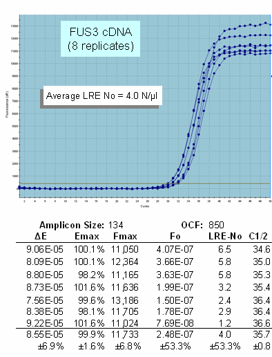
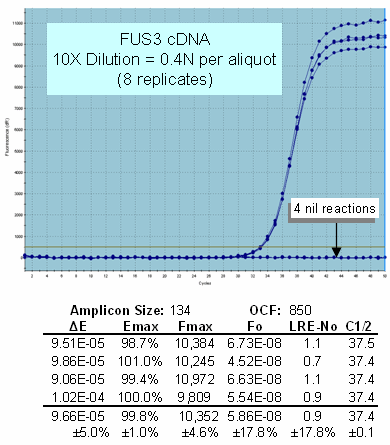
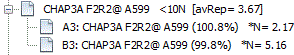

Note the data presented here was taken from:
Rutledge RG, Stewart D (2010) Assessing the performance capabilities of
LRE-based assays for absolute quantitative real-time PCR. PLoS ONE 5:
e9731.
Scattering of replicate profiles
In contrast to most samples which produce replicate profiles that are
highly clustered, samples containing <10 target molecules can produce
highly scattered replicate profiles. This is an example of a low abundance transcription that produced
replicate profile scattered over a two cycle region, which is predicted
by LRE quantification to range from 1-6 molecules, with an average of
4.0 molecules per µl. :
Production of highly scattered profiles at low target concentrations

Although this large range of predicted target quantities suggest that quantitative accuracy has been compromised, Poisson distribution provides an alternative explanation:
This illustrates that at very low target quantities the frequency of aliquots (Y-axis) that will contain a specific number of target molecules (X-axis) can vary considerably, and that this variance is dependent on the target concentration (Z-axis). Poisson distribution further predicts that at target concentrations below about 0.5 molecules per aliquot, the vast majority of aliquots will contain either one or zero target molecules.
The highly scattered FUS cDNA replicate profiles shown above are thus consistent with that predicted by Poisson distribution. Diluting the sample 10X (i.e. to a predicted 0.4 N/µl) also produced replicate reactions that are consistent with that predicted by Poisson distribution:
Profile clustering is restored for single molecule amplifications

Note that the four nil reactions are predicted to be a result of 0 N aliquots, which in the absence of non-specific amplification products will fail to produce an amplification product. Furthermore, the predicted target quantity of 0.5 N/µl (four molecules in eight aliquots = 4/8 = 0.5 per aliquot) is very close to the predicted 0.4 N per aliquot shown above, indicating that quantitative accuracy was maintained down to a single target molecule. While a detailed overview is beyond the scope of this discussion, working with single molecule amplifications provides an absolute landmark for real-time qPCR, in that it defines quantitative scale without the need to apply an external quantitative standard. A similar example is presented in the LDA Overview.
The <10 molecule problem thus consists of two phenomenon that impact LRE quantification. The first is that extensive scattering of amplification profiles can dramatically compromise the ability to generate an accurate average profile. The second is the necessity of averaging target quantities generated by individual replicate profiles in order to accurately determine target quantity. Importantly,this must include zero molecule aliquots, characterized by failure of an amplification reaction to generate a profile.
When a target quantity of <10 molecules is encountered, the LRE Analyzer will report target quantity as an average of that derived from the replicate profiles. This is indicated within the average profile label by presenting the target quantity in brackets:

The third LRE Overview video provided on the LRE qPCR website (sites.google.com/site/lreqpcr) provides a detail discussion of Poisson distribution and how absolute quantification can be conducted based on the frequency of nil reactions.
See also:
Assessing of Quantitative Accuracy